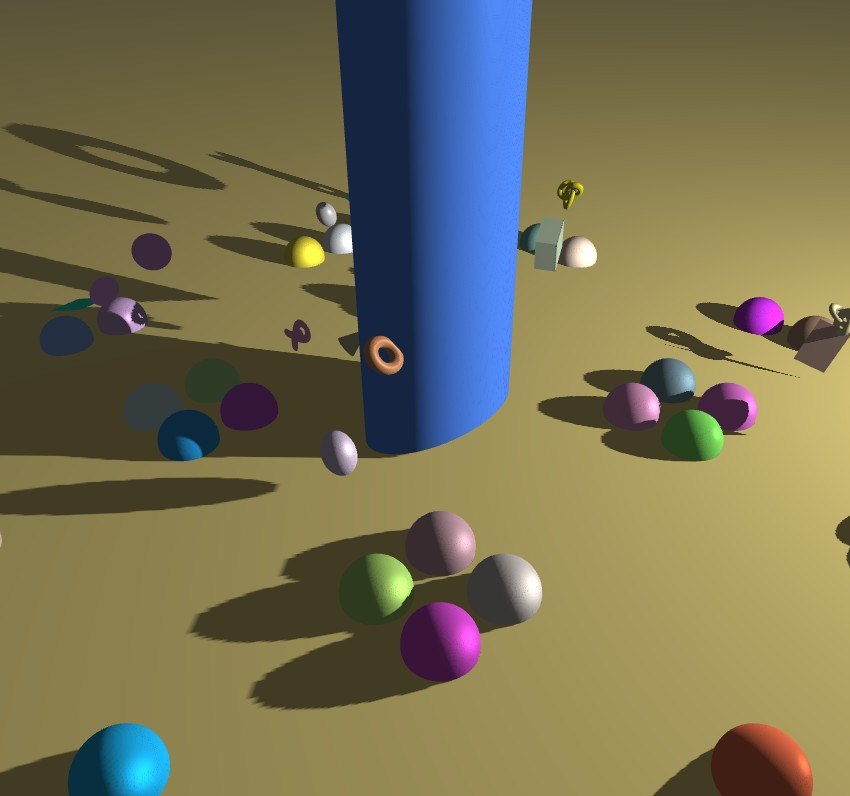

3D Graphics

The objective of this project was to implement a dynamic Shadow Mapping technique for a light source modeled as a perspective camera. This involved enhancing the Texture class to support depth and RGBA8 formats, creating a custom FrameBuffer class for rendering depth maps, and calculating proper transformation matrices to visualize both the shadow map and the light frustum using OpenGL 3.3 and WebGL 2.
D05ShadowMapping, Camera, MathHelper, and
FrameBuffer, and updated CMakeLists.txt.
DemosFactory under the display name "Shadow Mapping" and short name
"shadow".Texture class by implementing LoadAsDepthTexture with specialized
WebGL branching (GL::TexStorage2D for WebGL compatibility) and correct depth-clamping
parameters.ViewMatrix() and ToWorldMatrix() within the Camera
class for precise light-space math.FrameBuffer class to manage framebuffer operations and handle optional
depth/color attachments.D05ShadowMapping.cpp to handle depth pass rendering
(renderToDepthBuffer), screen space shadow mapping (renderToScreen), and debug
visualizations (drawLightFrustum, drawDepthTexture).shadow.vert, shadow.frag) utilizing
textureProj() for shadow texture lookups, light-behind-object validation, and proper gamma
correction (color1/2.2) prior to applying Exponential Fog.
Debugging shadow mapping can be notoriously tricky because when a shadow doesn't render, it could be due to
a tiny error anywhere in the pipeline—from incorrect matrix multiplications (World-to-Light space) to
texture state mismatches. Implementing the WebGL-specific texture allocation workaround
(TexStorage2D) taught me a valuable lesson in cross-platform API constraints. However, there is
immense satisfaction in seeing the debug light frustum lines perfectly align with crisp, dynamic shadows
being cast in real-time. Toggling the shadow parameters via ImGui and seeing the environment react instantly
made the custom engine framework feel like a professional, fully-fledged editor.